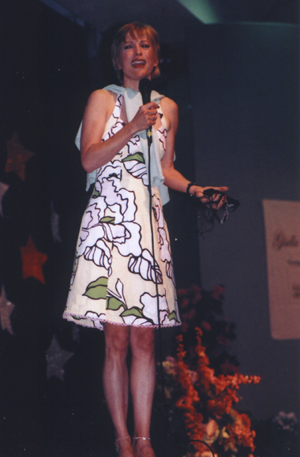
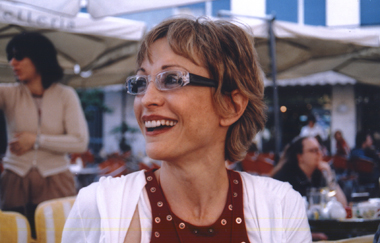
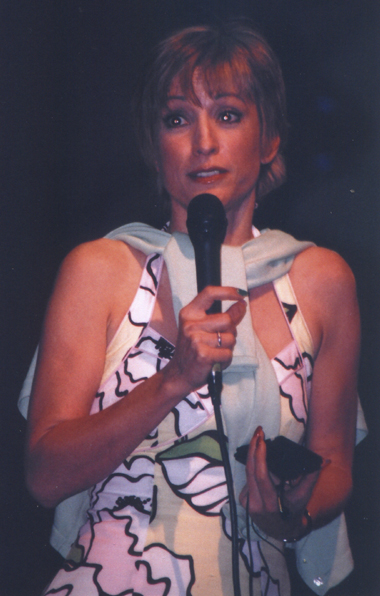
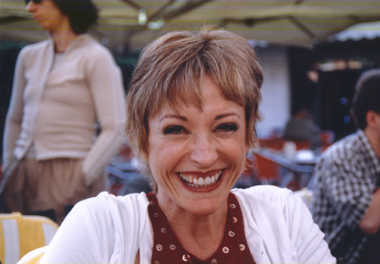

|
por
Mariana Pedroso Gamberger
H
sete anos assisti pela primeira vez ao episdio piloto de Deep Space Nine.
At ento eu nem sabia da existncia da srie. Quando me perguntaram o que eu
tinha achado, disse que no era nada especial, mas que uma certa Major era um
personagem muito interessante. Mal sabia que esse era o incio de uma grande paixo.
DS9 e Kira Nerys! Procurando
pela Internet, encontrei poucos, mas interessantes, sites sobre Kira Nerys e sua
intrprete, Nana Visitor. O que mais me chamou a ateno foi a paixo com que
os fs falavam sobre a atriz; em como ela uma pessoa excepcional, carinhosa
com os fs, atenciosa. Eu me deparei tambm com o seu f clube e com um grupo
maravilhoso de pessoas espalhadas por todo o mundo. Desde
ento, eu s poderia desejar que um dia pudesse me encontrar com essas pessoas
maravilhosas. E quando achei que no haveria mais esperana e oportunidades, ali,
do outro lado do Adritico, numa cidadezinha chamada Bellaria, como acontece em
todos os meses de maio, o f clube de Jornada nas Estrelas da Itlia promoveu
a maior conveno do pas. Eles sempre trazem convidados especiais de diversas
sries do universo de Jornada. Para a minha alegria, este ano Nana Visitor
era a convidada. Encurtando
a histria, apenas cinco dias antes da conveno, resolvi ir. Comprei os bilhetes
do trem, empacotei minhas coisas e aps uma viagem de 16 horas - durante a noite
toda e parte da manh -, cheguei em Bellaria. Era uma sexta-feira.
Encontrei
com o pessoal do f clube que tambm j estava por l. Eram pessoas vindas de
diversos pases somente para ver Nana. Alemanha, ustria, Irlanda, Estados Unidos,
da prpria Itlia e eu do Brasil (ou seria Crocia?). Ao todo, nove pessoas.
O
grande dia do encontro seria o sbado, quando Nana teria o seu painel e depois
autografaria para todos os presentes. Mas, no almoo, eis que surge a prpria
no refeitrio, juntando-se aos outros convidados. O pessoal do f clube imediatamente
levantou e foi falar com ela, para dar as boas-vindas. E l fui eu, inocente e
despreparada para tal momento. A primeira coisa que notei foi como ela alta
e magra. Aps beijinhos e apresentaes (somente eu e o garoto da Itlia no a
conhecamos), foi acertado um encontro somente conosco aps a sesso de autgrafos.
Ao voltar para a mesa, mal consegui comer e as minhas mos no paravam de tremer.
Eu tinha sido "nanatized"! 
Apesar
de eu j ter lido diversas transcries de chats e convenes, diversos artigos
de revista e entrevistas com Nana, ouvir essas histrias ao vivo, contadas pela
prpria, era outra coisa. Ela
teve o seu painel no sbado e no domingo, respondendo perguntas do pblico. Foi
uma experincia fascinante; at consegui acalmar meus nervos e fiz duas perguntas
no domingo. A sesso de autgrafos tambm foi tima, apesar do curto perodo de
tempo. Levei um pster da Kira, tirado da revista oficial, e em cujo verso havia
uma foto de Gul Dukat. Quando chegou a minha vez, um dos meus amigos disse a Nana
para adivinhar quem estava do outro lado e ela prontamente respondeu: "-
Dukat"? Sua cara ao olhar o outro lado foi impagvel e todo mundo caiu na
risada. Finalmente
chegou a hora do encontro. Fomos em um dos cafs no centro de Bellaria. Eu corri
at o hotel para pegar os presentes que tinha trazido para Nana. Quando voltei,
ela j havia chegado e, para a minha surpresa, qual era o nico lugar vazio para
eu sentar? Do lado da prpria! Ela conversou com a gente por uma hora, contando
sobre a sua vida, o que anda fazendo e ela sempre faz questo de perguntar o que
os outros esto fazendo e como vai cada um. Eu j comentei que ela uma pessoa
fantstica, doce, generosa e atenciosa?
 Foi
quando dei meus presentes para ela que tive a oportunidade de dizer alguma coisa,
porque, para ser sincera, eu no tinha dito nada at ento. No mximo, eu tinha
conseguido tirar algumas fotos. Eu lhe dei dois CDs de msica brasileira, pois
j sabia que antemo que ela gostava. Ela me disse que a sua msica favorita,
e que adorou o presente. De brinde, pude ouvi-la cantarolando guas de Maro!
Tivemos
um segundo encontro com ela no dia seguinte. Eu me despedi durante o almoo, pois
iria embora antes do anoitecer. O resto do pessoal, no entanto, ainda a encontraria
para um sorvete. Nem
preciso dizer que esse foi um dos melhores finais de semana que j tive. O pessoal
do f clube fantstico e espero ter a oportunidade de encontr-los novamente.
E, claro, Nana - que tudo e um pouco mais do que eu imaginava.
Durante
os painis, embora tenha havido pouca novidade,
Nana contou muitas histrias engraadas e interessantes. Vale a pena descrever
algumas delas. Lamentos
 Sobre o final de DS9, Nana mostrou-se desapontada por no encontrar mais
a maior parte das pessoas com quem trabalhou durante 7 anos. Mas ainda mantm
contato com Sid, que seu ex-marido e pai de seu segundo filho, Django. Alm
dele, Michael Dorn um grande freqentador de seus almoos.
Sobre o final de DS9, Nana mostrou-se desapontada por no encontrar mais
a maior parte das pessoas com quem trabalhou durante 7 anos. Mas ainda mantm
contato com Sid, que seu ex-marido e pai de seu segundo filho, Django. Alm
dele, Michael Dorn um grande freqentador de seus almoos.
Ela e Rene tambm so muito prximos. por isso que ela achava muito estranho
e sempre foi contra o relacionamento amoroso entre Kira e Odo. A atriz acha que
o final foi perfeito para os dois. Eles realmente no deveriam ficar juntos e
o fato de Odo ter ido para o Grande Link foi muito mais fiel ao seu personagem.
Outra pessoa com quem ela tinha grande amizade era Ira Behr. Sendo ambos nova-iorquinos,
ela disse que sempre que discutiam sobre algo, parecia que estavam tendo uma enorme
briga. Segundo Nana, as pessoas ao lado at saam de perto. Na realidade, tratava-se
apenas do temperamento de ambos. Alis,
ela tambm contou que a grande briga que os dois tiveram foi quando Ira chegou
at ela todo feliz e disse-lhe que Kira iria ter um caso com Dukat. Nana quase
teve um infarto e brigou com o amigo at o final, dizendo que Kira nunca teria
qualquer relacionamento com Dukat, que isso estaria totalmente fora do seu personagem.
Essa batalha ela ganhou, j que Kira nunca teve um relacionamento com Dukat. Porm,
sua me teve. Como
Nana disse, nem sempre ela conseguia ganhar a batalha - mas nunca foi por falta
de tentativa.  Confidncias
Nana
Visitor
sente saudades de Kira. Ela contou que, durante a poca em que a srie era produzida,
chegou a ter diversos pesadelos, nos quais era Kira e estava presa em um campo
de prisioneiros durante a ocupao cardassiana. Isso mostra como estava
envolvida com o personagem e como se preocupava em torn-lo o melhor possvel.
Na
semana anterior ao trmino de Deep Space Nine, somente ela chorava, e parecia
ser a nica que no estava preparada para o seu final.
Quando viu que os cenrio estavam sendo desmontados, ela estava caminhando pelo
Promenade, e encontrou dois dos trabalhadores que, por sinal, eram seus amigos.
Ela perguntou se eles poderiam pegar alguma coisa para ela, pedindo, em seguida,
o peixe que ficava pendurado na parede do Quark's. Eles disseram que fariam isso,
mas que ningum poderia saber, j que a ordem era de que nada poderia sair dali.
Nana voltou para o seu trailer e, aps um tempo, ouviu um batido na porta. Quando
abriu, eram os dois trabalhadores carregando o peixe e querendo saber onde estava
o seu carro para que eles pudessem colocar logo dentro, para que ningum visse.
Depois disso, veio uma ordem do Rick Berman, de que estava terminantemente proibida
a retirada de qualquer material dos sets e que tudo era propriedade da Paramount.
Nana nos perguntou ento, se ela no deveria pendurar o peixe na sala da casa
dela e chamar o Rick Berman para jantar. A platia caiu na gargalhada.
Sobre maquiagem, aps o primeiro dia que estava usando o nariz bajoriano, ao final
das filmagens, ela simplesmente o arrancou com as mos. Foi ento que descobriu
que na realidade ele era fixado com cola e no com um produto mais desenvolvido.
Isso lhe custou uma cicatriz no nariz, que tem at hoje. Bastidores
O
episdio mais difcil ,em termos emocionais, foi "Duet", o seu
favorito, pois o episdio todo foi centrado em Kira e em Aamin
Marritza - sem efeitos especiais, sem ao.
Por outro lado, o mais
difcil em termos fsicos foi o primeiro do universo espelho, "Crossover",
dado que ela trabalhou em jornada dobrada, fazendo a Kira e a Intendente. Durante
esse episdio ela chegou a trabalhar 18 horas por dia. Nana acha que a Intendente
no era sexy, pois o figurino de couro fazia um barulho insuportvel. Alm disso,
por causa do calor, ela suava muito e apareciam manchas por toda a roupa. Ela
tinha que ficar na frente de um ventilador gigante, at que elas desaparecessem.
Nana tambm falou sobre Avery
Brooks (capito Sisko). Com seu jeito todo particular, na maior parte das vezes
ningum consegui entend-lo, nem mesmo os diretores. Segundo ela, todos ficavam
apavorados quando tinham que dirigir o ator, temendo no entender o que ele queria
dizer. Mas Nana passava muito tempo com ele e aprendeu a interpret-lo. Ento,
todos vinham a ela e perguntavam: "- O que ele quis dizer com isso"?
Na poca em que surgiram pela primeira vez os action figures, Nana resolveu
dar um para seu filho Buster, que tinha trs anos de idade. Assim que ele pegou
a boneca, falou "mame". Ela ficou toda orgulhosa pelo filho t-la reconhecido.
Ainda sobre Buster, como ela queria ficar com ele a maior parte do tempo, sempre
o levava aos sets de filmagem. Certa vez, quando a luz vermelha estava acesa -
o que significa silncio absoluto, pois se est filmando -, um dos tcnicos chegou
perto de Buster, e perguntou como ele estava. Imediatamente, o garotooca com dois
anos de idade, colocou o dedo na boca, em sinal de silncio, e apontou para a
luz.
Django, o segundo filho, tambm sempre ficou no ambiente de trabalho. Nana voltou
a trabalhar aps duas semanas do nascimento e, certa vez, quando perguntaram ao
garoto onde ele tinha nascido, ele respondeu "Star Trek, Los Angeles".
Curiosamente, quando Nana fez a audio para o papel de Kira, ainda no haviam
selecionado uma atriz para Dax. Ela acabou lendo para a produo algumas partes
dessa personagem, que lhe chamou bastante a ateno. Naquele instante, ela achou
Dax mais interessante e conta que, se tivessem dado a ela a opo de escolha,
teria escolhido fazer a Oficial de Cincias. Vida
aps DS9
Com relao aos trabalhos ps-Deep Space Nine, Nana contou que gostou muito
de fazer "Dark Angel" e trabalhar com James Cameron. S lamenta no
ter tido condies de continuar na segunda temporada, pois na poca estava morando
em Nova York, e fazendo o musical "Chicago" na Broadway. Isso significava
voar seis horas at Vancouver, gravar todas as suas cenas em trs dias, voltar
para Nova York para fazer "Chicago", e depois na semana seguinte voltar
a Vancouver. E, claro, no meio disso, tudo arranjar tempo para seus filhos.
Ela disse que ficou triste pelo fato de a srie ter sido cancelada, pois sabia
que Cameron tinha planos interessantes para ela.
Recentemente, Nana Visitor esteve em dois seriados: "According to Jim"
e "Las Vegas".
Ela tambm fez um filme com Bruce Boxleitner, "They Are Among Us", que
ainda no foi distribuido nos EUA.

|